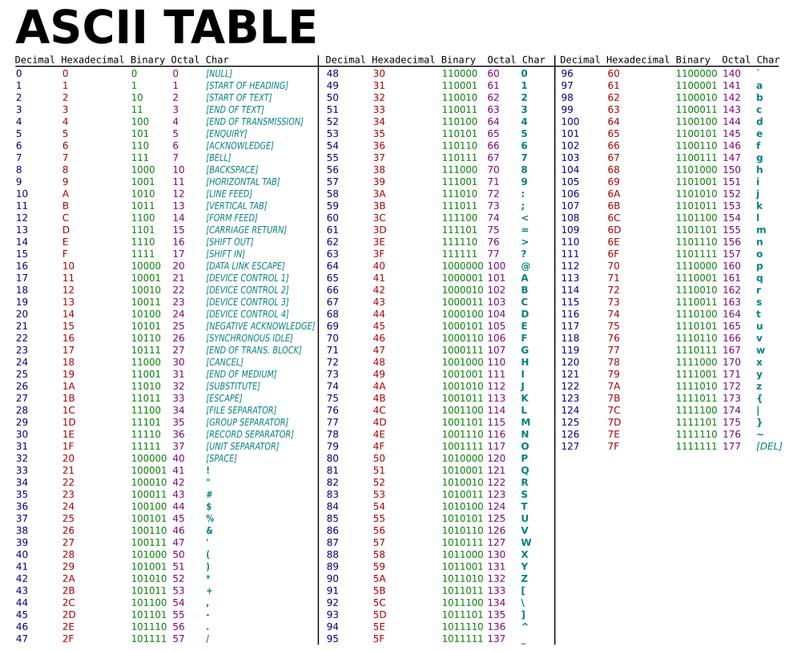
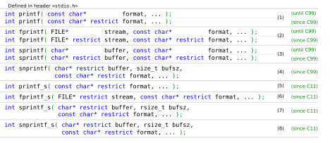
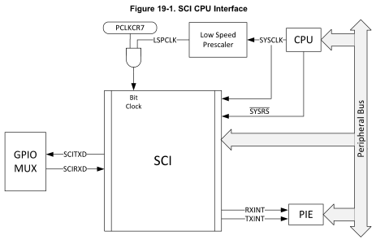
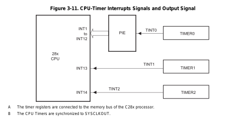

1. SE 423: Introduction to MechatronicsLecture 4: Numbers, Strings, SCI and InterruptsMarius Juston
Monday, February 2nd, 2026
2. Reminders
Office Hours:
- Monday: 4-6 PM, Neel
- Tuesday: 11-1 PM, Lakshmi
- Tuesday: 1-3 PM, Samuel
- Tuesday: 2-5 PM, Dan & Marius
Lab: Starting Lab 2 this week. This is also a 1-week lab!
Homeworks (This week):
- All check-offs for homework 1 are due February 3, 5PM (The end of office hours)
- Answers and code submissions for homework 1 are due February 4, 9AM
LabVIEW (This week):
- All check-offs for LabVIEW 1 are due February 5, 5PM
FIRST ASSIGNMENTS ARE DUE THIS WEEK!
3. Questions?
Homework, Lab, LabVIEW, quiz questions?
(Enjoyed the first actual lab?)
4. Integers
5. Integers Size
The C2000 MCU is a 32-bit CPU, meaning its registers and Arithmetic Logic Unit (ALU) are optimized for 32-bit operations, though it can also handle 16-bit data types. As seen in the Homework the minimum data size is 16-bits!
In most programming classes you will have learned that 1-byte = 8-bits; however, in the C2000, given that TMS320C28x char is 16 bits and the ANSI/ISO (C programming standard) further stipulates that when sizeof is applied to char, the result is 1. So, 1-byte = 16-bits for this system!!!
6. Signed Integers
How do we represent negative numbers in a system that only understands 0 and 1?
What is the problem with just setting a single bit to represent positive or negative?
The problem is that you just use a single bit to define the positive or negative, i.e.
0b101 = -1 vs 0b001 = 1
What happens at 0?
0b100 = -0 vs 0vb000 = 0
Which doesn’t make much sense, we waste a single number for a -0!
7. 2’s Complement
This utilizes Modular Arithmetic to derive that:
Extremely simple and CPU operation wisely efficient!
Achieves full range of:
Most significant bit ( the left-most bit in this case ), represents the sign (0=positive, 1=negative)
8. 2’s Complement
Additional resource: https://www.youtube.com/watch?v=lKTsv6iVxV4
9. String
10. ASCII
Remember that everything in the CPU is binary. So how do we define what a `a`, `b`, `<` represents as a character?
The ASCII character set! It is a 7-bit mapping, 0-127, with an 8-bit character extended edition (not the same as UNICODE).
In C a character is a single letter and represented as `x`, you CANNOT use “x” for a character in C, in Python there is no such thing as a char, just strings!
Strings “abcd” in C represent an array of characters char*. The most important character is 0x00 (NULL), which represents a sentence stopper.
In C, a string is a contiguous (where the pointers are sequentially next to each other) block of memory containing ASCII character, terminated with NULL. Without it the CPU would read forever until a segfaul occurs (reading restricted memory)!
11. ASCII

If there are less than 7 bits, just put 0s in front of the binary representation

12. printf and sprintf
We want to write content to the output stream ( the stream can be your console output, serial communication, a file, a string ). The function sprintf, outputs to a buffer, printf outputs to the default output stream.
serial_printf(&SerialA,"Num Timer2:%ld Num SerialRX: %ld\r\n",CpuTimer2.InterruptCount,numRXA);

13. printf and sprint - format
The format options are available here. Given that you need to format you string based on your pattern, the runtime is non-deterministic and printing usually takes a “very long” (in computer speed) time.
A format specifier follows this prototype:
%[flags][width][.precision][length]specifier
/* printf example */
#include <stdio.h>
int main()
{
printf ("Characters: %c %c \n", 'a', 65);
printf ("Decimals: %d %ld\n", 1977, 650000L);
printf ("Preceding with blanks: %10d \n", 1977);
printf ("Preceding with zeros: %010d \n", 1977);
printf ("Some different radices: %d %x %o %#x %#o \n", 100, 100, 100, 100, 100);
printf ("floats: %4.2f %+.0e %E \n", 3.1416, 3.1416, 3.1416);
printf ("Width trick: %*d \n", 5, 10);
printf ("%s \n", "A string");
return 0;
}
14. printf and sprint – format – specifier & length


%[flags][width][.precision][length]specifier
15. printf and sprint – format – additional flags

%[flags][width][.precision][length]specifier
16. RS-232 Serial Port
17. SCI
An RS-232 serial port is a standard for serial communication, sending data one bit at a time. It sends specifically 8-bits of data.
SCI is the hardware peripheral inside the C2000 MCU that implements the UART (Universal Asynchronous Receiver-Transmitter) protocol.
The Protocol:
- Asynchronous: No shared clock wire. Timing relies on agreed-upon Baud Rate.
- Frame: Start Bit (Logic 0) → Data Bits (LSB first) → Stop Bit (Logic 1).
init_serialSCIA(&SerialA,115200);
18. SCI

19. SCI
20. SCI
TTL (Transistor-Transistor Logic):
The native language of the MCU (GPIO pins).
- Logic 1: 3.3V (or 5V).
- Logic 0: 0V (Ground).
RS-232 (Reference Standard 232):
Voltage Levels: Uses bipolar signaling to resist noise.
- Logic 0: +3V to +15V.
- Logic 1: -3V to -15V.
Notice that RS-232 Logic 1 is negative voltage. This is an inverted logic compared to TTL.
Hardware: You cannot connect a C2000 GPIO directly to a PC's RS-232 port. You need a transceiver to invert and boost the voltages. ( this is done inside the red board)
21. SCI

22. CPU Interrupts
23. CPU Interrupts ( Modern computers )
YouTube video: How Interrupts Work in Modern Computers (BitLemon)
24. Hardware Interrupts (Timer)

OR
AND
NOT
Speaker notes
SYSCLKOUT is the system clock (e.g., 200 MHz).
TCR.4 is the Timer Control Register bit that enables or disables counting.
The timer only receives clock pulses when software sets the START bit. This is why timers do nothing until you explicitly enable them in software.
16-bit Divide-Down (TDDRH:TDDR)
This block divides the incoming clock frequency.
This allows the timer to operate at manageable speeds
16-bit Prescale Counter (PSCH:PSC)
This is an additional counter that:
Counts down
Generates a borrow when it underflows
That borrow is what advances the main 32-bit timer.
The prescaler slows time down before it reaches the main timer counter.
32-bit Period Register (PRDH:PRD)
This is the value the timer reloads from.
32-bit Counter (TIMH:TIM)
This is the actual counter:
Decrements every prescaled clock tick
When it reaches zero:
A borrow occurs
An interrupt is generated
The counter reloads from PRD
25. Hardware Interrupts (Timer)

Speaker notes
Timer 0
TINT0
INT1–INT12 via PIE
Timer 1
TINT1
INT13 (direct)
Timer 2
TINT2
INT14 (direct)
The Peripheral Interrupt Expansion (PIE) is an interrupt router.
It:
Takes many peripheral interrupts
Maps them to CPU interrupt vectors
Timer 0 is routed through the PIE because:
It is commonly used for application-level tasks
It supports prioritization and masking
Software Consequence
To use Timer 0:
Enable the timer interrupt
Enable the PIE group
Enable the CPU interrupt
Acknowledge the PIE inside the ISR
This makes Timer 0 ideal for:
Control loops
Scheduling
RTOS ticks
Timers 1 and 2 Bypass the PIE
Timer 1 → INT13 Timer 2 → INT14
These are dedicated CPU interrupts.
Why?
They are intended for:
High-priority system tasks
Real-time services
Deterministic timing
They:
Have lower latency
Are simpler to configure
Are harder to misuse accidentally
26. Hardware Interrupts
EALLOW;
PieVectTable.TIMER0_INT = &cpu_timer0_isr;
PieVectTable.TIMER2_INT = &cpu_timer2_isr;
PieVectTable.TIMER1_INT = &cpu_timer1_isr;
PieVectTable.SCIA_RX_INT = &RXAINT_recv_ready;
PieVectTable.SCIB_RX_INT = &RXBINT_recv_ready;
PieVectTable.SCIC_RX_INT = &RXCINT_recv_ready;
PieVectTable.SCID_RX_INT = &RXDINT_recv_ready;
PieVectTable.SCIA_TX_INT = &TXAINT_data_sent;
PieVectTable.SCIB_TX_INT = &TXBINT_data_sent;
PieVectTable.SCIC_TX_INT = &TXCINT_data_sent;
PieVectTable.SCID_TX_INT = &TXDINT_data_sent;
EDIS;
27. Software Interrupts
EALLOW;
PieVectTable.EMIF_ERROR_INT = &SWI_isr;
EDIS;
28. Interrupts
All the interrupt options are available inside the PIE Vector Table inside F2837xD_pievect.h
Table 3-2 shows the PIE group and channel assignments for each peripheral interrupt. Each row is a group, and each column is a channel within that group. When multiple interrupts are pending, the lowest-numbered channel is the lowest-numbered group is serviced first. Thus, the interrupts at the top of the table have the highest priority, and the interrupts at the bottom have the lowest priority.
29. Enabling Interrupts
// Enable CPU int1 which is connected to CPU-Timer 0, CPU int13
// which is connected to CPU-Timer 1, and CPU int 14, which is connected
// to CPU-Timer 2: int 12 is for the SWI.
IER |= M_INT1;
IER |= M_INT8; // SCIC SCID
IER |= M_INT9; // SCIA
IER |= M_INT12;
IER |= M_INT13;
IER |= M_INT14;
// Enable TINT0 in the PIE: Group 1 interrupt 7
PieCtrlRegs.PIEIER1.bit.INTx7 = 1;
// Enable SWI in the PIE: Group 12 interrupt 9
PieCtrlRegs.PIEIER12.bit.INTx9 = 1;
30. Interrupts - Timers
TIMER0_INT, TIMER1_INT, TIMER2_INT:
The standard CPU countdown timers.
RTOS_INT:
A dedicated interrupt line for Real-Time Operating System context switching.
WAKE_INT:
Wakes the CPU from Low-Power (IDLE/STANDBY) modes.
31. Interrupts - Sensors
ADCA1_INT through ADCD4_INT (The ADCs):
These trigger when the Analog-to-Digital Converter finishes a batch of conversions.
Classification: ADCx_EVT_INT (Threshold event), ADCx1_INT (High Priority Loop), ADCx2/3/4_INT (Lower priority monitoring).
EQEP1_INT, EQEP2_INT, EQEP3_INT:
Enhanced Quadrature Encoder Pulse. These trigger on position events (e.g., Index pulse or Unit Timeout) from a motor encoder. Crucial for speed calculations.
ECAP1_INT through ECAP6_INT:
Enhanced Capture. Used to measure the width of incoming pulses (e.g., measuring the frequency of an incoming PWM signal from another sensor).
SD1_INT, SD2_INT:
Sigma-Delta Filter. These define interrupts for high-fidelity, isolated current sensing, typically used in high-voltage motor drives.
32. Interrupts – External Hardware Events
XINT1_INT through XINT5_INT (External Interrupts):
These are triggered by voltage transitions (Rising Edge, Falling Edge, or Both) on physical pins. These vectors represent the C2000's direct interface with the outside world via General Purpose Input/Output (GPIO) pins.
33. Interrupts – Actuation ( will go into more details later)
EPWM1_TZ_INT through EPWM12_TZ_INT (Trip Zones):
Highest Priority Control Interrupts. These fire when a hardware comparator (CMPSS) detects an over-current or over-voltage event. The PWM hardware shuts off instantly (nanoseconds) and then informs the CPU via this interrupt.
EPWM1_INT through EPWM12_INT:
Standard PWM interrupts, usually triggered at TBCTR = 0 or TBCTR = PRD. Used to update duty cycles for the next cycle.
34. Interrupts – Communication (RX = receive, TX = transmit)
SPIA/B/C_RX_INT & SPIA/B/C_TX_INT:
Synchronous Serial Interface (High speed sensors/DACs).
I2CA/B_INT & FIFO_INT:
Inter-Integrated Circuit (EEPROMs, temperature sensors).
SCIA/B/C/D_RX_INT & TX_INT:
UART (RS-232, discussed in the lecture). Connecting to PC/MATLAB.
CANA0/1_INT & CANB0/1_INT:
Controller Area Network. The standard automotive bus for communicating with other ECUs.
MCBSPA/B_RX_INT & TX_INT: Multichannel Buffered Serial Port. (Legacy Audio/DSP protocol).
USBA_INT:
Universal Serial Bus (Bulk data transfer).
35. Interrupts – Errors
NMI_INT (Non-Maskable Interrupt):
The only interrupt that cannot be ignored by the CPU. Used for critical hardware failures.
ILLEGAL_INT:
Triggered if the CPU attempts to decode an opcode that does not exist. (Common pointer corruption symptom).
EMIF_ERROR_INT:
External Memory Interface error. Indicates a hardware timing violation or disconnect with external RAM/Flash.
RAM_CORRECTABLE_ERROR_INT / FLASH_CORRECTABLE_ERROR_INT:
The ECC (Error Correction Code) logic detected a bit-flip but fixed it. The ISR usually logs this event for predictive maintenance.
RAM_ACCESS_VIOLATION_INT:
The CPU tried to write to a protected memory region.
SYS_PLL_SLIP_INT / AUX_PLL_SLIP_INT:
The Phase Locked Loop (clock generator) has lost its lock. The CPU clock is unstable. The system must immediately halt PWM generation to prevent blowing up power electronics.
FPU_OVERFLOW_INT / FPU_UNDERFLOW_INT:
The Floating-Point Unit calculated a value exceeding IEEE-754 limits (creating or )
36. Interrupts – CPU Accelerator
DMA_CH1_INT through DMA_CH6_INT:
Direct Memory Access. Triggers when a large block of memory (e.g., an ADC buffer) has been moved without CPU intervention.
IPC0_INT through IPC3_INT:
Inter-Processor Communication. This device is Dual Core (CPU1 and CPU2). These interrupts are the "phone lines" allowing CPU1 to signal CPU2.
VCU_INT:
Viterbi Complex Unit. An accelerator for vibration analysis (FFT) and communications encoding.
37. Interrupts – CPU Accelerator – CLA ( floating point engine )
CLA_OVERFLOW_INT / CLA_UNDERFLOW_INT:
Mathematical errors specifically within the CLA core.
CLA1_1_INT through CLA1_8_INT:
The Control Law Accelerator (CLA) is an independent 32-bit floating-point math engine. Called once a floating point operation is done.
38. Interrupts – High-Speed Peripherals
UPPA_INT: Parallel Interface Communication
This is a high-speed, multi-channel parallel bus often used to interface with high-speed ADCs or FPGAs
39. Interrupts – Placeholders & User Definitions
PIE1_RESERVED_INT through PIE88_RESERVED_INT:
The hardware architecture allocates a grid, but not every slot is connected to a peripheral in this specific chip. These must be mapped to a "Default ISR" that essentially does nothing, to prevent system crashes if noise triggers a phantom interrupt.
USER1_INT through USER12_INT:
These are software traps. You can trigger these manually in code using the assembly instruction TRAP #20. They are often used by RTOS kernels to implement system calls.
40. Interrupts – Debugging
DATALOG_INT (Datalogging Interrupt):
Used primarily by TI's data-logging modules to trigger a capture of internal variables at a specific sample rate. Helpful for logging data for visualization.
EMU_INT:
Triggered by the on-chip debug logic (JTAG). This handles hardware breakpoints or software "Halt" commands. It allows the CPU to enter a suspended state while maintaining the integrity of the peripheral registers.